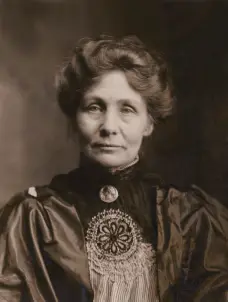
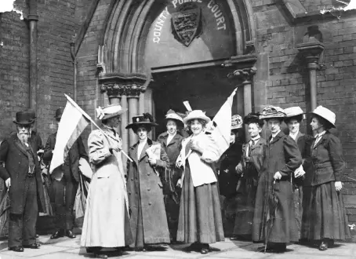
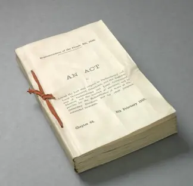

The suffragette, a story of the right to vote

The Suffragette are the members of the british organization, the Women’s Social and Political Union (WSPU). An organization created in 1903 to demand women's suffrage in the United-Kingdom. Indeed in the United-Kingdom women’s suffrage was accepted in 1928. It’s before France who accept it in 1944. But after some countries like Denmark in 1915 or Germany in 1918.
Emmeline Pankhurst the revolutionary one

Emmeline Pankhurst
The WSPU was created in Manchester by women of the Pankhurst family. Emmeline, the mother, and her daughter CHristabel, Sylvia and Adela. Emmeline decides to create the WSPU after having witnessed some ineffective action of the National Society for Women’s Suffrage. The objective of WSPU is to do more direct action. The actions begin in 1905 when Christabel and Annie Kenney manifeste in a Liberal Party meeting. The two women are arrested for having chanted feminist slogan during the meeting. The WSPU continues the actions. On 21 june 1908, 200 000 people, including 50 000 white dress, came together to Hyde Park for women’s suffrage. But nothing changes. They also do some hunger strikes, they chained themselves on the Parlement portail, etc … But the government is still blind and doesn’t accept the demands of the Suffragettes.

Photo of the demonstration in Hyde Park
A fight badly started
However after several years of fight without result the WSPU loses activists. First because of lack of result, and also because they are no longer in agreement with Emmeline Pankhurst’s violent methods. In 1907 Teresa Billington creates the Women’s Freedom League (WFL). An organisation with the same objective as the WSPU but with more peaceful actions. They don’t pay their taxes or they don’t participe to the referencement. The WSPU, the WFL and other activists continue their actions. More and more Suffragettes were arrested by the police but that doesn’t slow them down. Indeed they use their trials to mediate and diffuse their ideas in all of the United-Kingdom.
A group of suffragettes in front of the police court
The Suffragettes continue their actions with some hunger strikes or manifestations. The police answer with more and more violence such as Mary Jane, the Emmeline’s sister, is mortally injured by the police on Christmas day 1910. Suffragettes abandone peaceful actions. In march 1912 they broke all glass of the streets of London’s West. In 1913 Christabel, the sister of Emmeline, escaped in France and her mother in jail. Christabel try to give a petition to the France’s King but she’s arrested. The WSPU becomes clandestine.
The long-awaited victory
In 1914 the first World War began. Emmeline proposes a deal. In exchange for the liberation of all Suffragettes, they will participate to the war effort by working in factories. The government accept the deal. Some soldiers begin to come back in 1916, soldiers who are for women's suffrage. The government understands they must give suffrage to women. Soldiers fought for the country, the government can’t ignore them. Activists continue their actions for the movement and to put pressure on the government. They must give to women what men have. In 1918 the Representation of the people Act was voted on. It allows women over 31 years with a husband registered to vote and owner, and men over 21 years to vote! The eal women’s suffrage for all women over 21 years was voted in july 1928. It was a fight of 25 years for Emmeline Pankhurst and the WSPU, but the fight has begun before and has lasted 60 long years.
The Representation of the People Act
Lire aussi